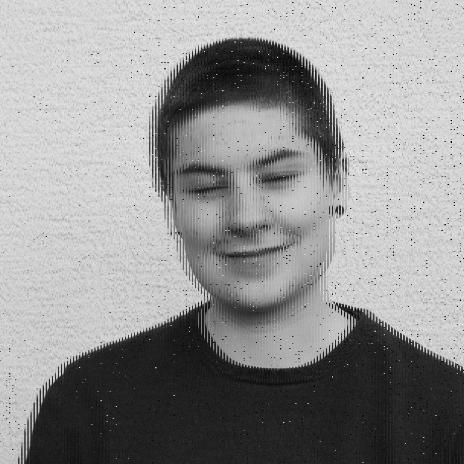

hey :) i'm sophie and i'm currently studying communication design at the fakultät für gestaltung mannheim. my background is still relatively small, i did an internship in a b2b inbound agency in 2019 and there i got a taste for illustration, communication and web development. in the winter semester 20/21, after i wrote my a-levels in 2020, i started studying communication design in mannheim.
the camera has been with me for most of my life. i like to capture different angles and perspectives, not always sticking to the rules of photography and trying out new experimental techniques in my photography. since a photography workshop i also know what aperture, exposure and iso mean ;)
it is important to me to tell stories with meaning. i do illustrations with pencil as well as with pixels. i recently discovered my love for editorial design, no matter if magazines, brochures or posters. clear structure and grids give orientation, but i also like to leave them to draw attention to something.
i am fascinated by the connection between design and digital, human and digital, analog and digital - the interface between human and technology. i like to design interactions, no matter if in everyday life as an interface or in installations in the context of art or for enlightenment, to draw attention to problem areas and power shifts.
i like to read and feel into new topics, to collect new perspectives for existing and upcoming projects. design is nothing superficial for me, but mostly goes deep into the wishes, needs, goals and values of people, no matter if as client or addressee. i want my design to shape the world with responsibility for all people.
